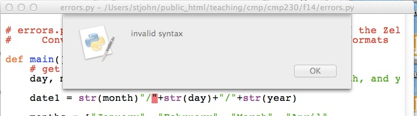

Laboratory Exercise 9
CSCI 127: Introduction to Computer Science
Hunter College, City University of New York
Spring 2025
Learning Objectives:
- Students will write programs that map GIS data using Turtles.
- Students will write programs that map GIS data using Plotly Express.
- Students will incorporate data files into their maps and plots.
- Students will explore finding errors (i.e. debugging).
- Students will assess code quality using standard tools (pylint at the command line).
Software tools needed: terminal (command line), web browser and Python programming environment with numpy and matplotlib packages installed.
1. World Maps with Turtles
We are going to use Python to make maps. Let's start by mapping cities of the world. Locations in the world are usually indicated by their longitude and latitude.
- Longitude measures the number of degrees east or west of the prime meridian. When written as a number, it ranges from -180 to +180.
- Latitude measures the number of degrees north or south of the equator. When written as a number, it ranges from -90 (the south pole) to +90 (the north pole).
In the trinket below, map the following cities (GIS coordinates are rounded to the nearest whole number):
- New York City (longitude: -74, latitude: 41),
- Los Angeles (longitude: -118, latitude: 34),
- Paris, France (longitude: 2, latitude:49),
- Tokyo, Japan (longitude: 140, latitude: 35), and
- Rio de Janeiro, Brazil (longitude: -43, latitude: -23).
2. Using Plotly Express
To create interactive maps, we will use the open source Python package, Plotly Express (often called: "px"). It is a package for creating images from charts to geographic maps quickly, often with just one line of code. It is part of the Plotly.py package, which allows more customization, but takes many more lines of code.
(Plotly Express is installed on the lab machines, To check to see if your home machine has it, type at the Python prompt:
import plotly.express as pxIf you get an error, go to the terminal, and download it:
$ pip install plotlyOur First Map
Our first interactive map will be centered on New York Center. If the navigation bar is not visible, click on the map below for it to appear. Our new map will let you zoom in, scroll left or right, as well as hover to get more information:
To build the map, we are going to use markers which are part of the graphics objects inside plotly. Here's the code:
import plotly.graph_objects as go #Including for markers
#Add a marker for NYC:
fig = go.Figure(go.Scattermap(lat=[40.7128], lon=[-74.0060],
mode='markers',
marker=go.scattermap.Marker(size=14),
text=['New York City']))
#Zoom and center the map on NYC:
fig.update_layout(hovermode='closest',
map=dict(center=go.layout.map.Center(lat=40.7,lon=-74),
zoom=8))
fig.show()
fig.write_html('first_map.html')
- To build the map, we used markers which are part of the graphics objects inside plotly. The first line are to import the graphic objects (abbreviated go).
- Our next line sets up a marker for New York City on our figure. Note that includes the latitude and longitude, as well as the size and text to be displayed when the user hovers over the map.
- Maps are centered at the origin (lon=0, lat=0), so, the next line adjusts the map center to be on New York City and zooms in the initial focus to 8.
- The fig.show() works similarly to our displaying of images, but instead of a matplotlib window, the map will appear in the browser.
- The final line saves the HTML code to a file called first_map.html.
This first map is an example of tile web map in Plotly which loads in smaller regions (tiles) which are dynamically loaded when the user changes the zoom or focus. There are many different tile maps available and we can specify which we would like by modifying using the layout() function.
For example, if we add the line:
fig.update_layout(map_style="satellite")the resulting HTML map is:
World Map
In addition to tile maps, Plotly also has outline maps. Let's draw the world map that we drew with turtles above. If the navigation bar is not visible, click on the map below for it to appear. Our new map will let you zoom in, scroll left or right, as well as hover to get more information:
The information for the map is stored in a DataFrame (the one we created as an example in Lab 8). Once we have the data nicely organized in the DataFrame, we can use to make the map:
import plotly.express as px #Import the plotly express package for making maps
import pandas as pd #We're using Pandas to organize the data
data = {
'city': ['New York', 'Los Angeles', 'Paris', 'Tokyo', 'Rio de Janeiro'],
'latitude': [40.7128, 34.0549, 48.8575,33.8688, -22.9068],
'longitude': [-74.0060,-118.2426, 2.3514,139.6500, -43.1729],
'population': [8_258_000, 3_821_000, 2_103_000, 14_180_000,6_211_000]
}
df = pd.DataFrame(data)
# Create the scatter plot on a map
fig = px.scatter_geo(df,
lat="latitude",
lon="longitude",
size="population", # Size of the markers based on population
hover_name="city", # Display city name on hover
projection="natural earth", # Map projection
title="City Populations")
fig.show() #Shows the map in a browswer
fig.write_html('world_map_px.html') #
Save this file and run it. It will open the map in a browswer as well as
create a file called world_map_px.html.
3. Plotting from Files
We can combine the mapping of Plotly with the tools we have used for CSV files.
Let's make an interactive map of the CUNY campuses. We can download a CSV file from data.ny.gov:
(Export as a .csv file and save in the same directory as your programs.) Open the file to make sure you have all the lines (should be 23) and to check if the column headings occur in the first row (they do, so no need to skip rows when reading in the file).Let's use Pandas to read in the file. We will need to import pandas and Plotly Express:
import plotly.express as px
import pandas as pd
To read in the CSV file, we'll use pandas' CSV reader. We'll print out the column names to find which columns has the location information:
cuny_df = pd.read_csv('CUNYcampuses.csv')
print(cuny.columns)Index(['College or Institution Type', 'Campus', 'Campus Website', 'Address',
'City', 'State', 'Zip', 'Latitude', 'Longitude', 'Location'],
dtype='object')We need to know the exact names of the columns, so, we can use it for adding our markers to the map. Note that for this CSV file, all the column names are capitalized, so, we need to capitalize them in the Python code.
Note: we saved our CSV file to CUNYcampuses.csv. If you saved it to a different name, change the input parameters for read_csv() to the name of your file.
Next, let's set up our markers, specifying which columns have the latitude and longitude:
fig = px.scatter_map(cuny_df, lat="Latitude", lon="Longitude", hover_name="Campus", title="CUNY Campuses", zoom=9)
and next centering the map on Hunter and adjusting the zoom:
Lastly, let's show our map and save our map:
fig.show()
fig.write_html('cunyLocations.html')Your map should load in a browser and is also saved to the file: cunyLocations.html.
4. Finding Errors
Finding, and fixing errors, in your programs is a very useful skill. Let's look at a program with lots of errors and work through how to identify the issues and fix them. If you cloned the repo above, you will have a copy of errors.py on your computer (you can also download from the webpage). When loaded into IDLE, it does not run:# errors.py is based on dateconvert2.py from Chapter 5 of the Zelle textbook
# Converts day month and year numbers into two date formats
def main()
# get the day month and year
day, month year = eval(input("Please enter day, month, and year numbers: ")
date1 = str(month)"/"+str(day)+"/"+str(year)
months = ["January", "February", "March", "April",
"May", "June", "July", "August",
"September", "October", "November", "December"]
monthStr = months[-1]
date2 = monthStr+" " + str(day) + ", + str(year)
print("The date is" date1, "or", date2+".")
main()The red line indicates where the intepreter has found an error. Can you tell what it is? Syntax is another word for grammar, so, it most likely missing `punctuation' or a misspelling of some sort. We have spelled def correctly and have the right number of parenthesis, so, what else is missing?
The answer is after the parenthesis on a function definition, a colon is required. Add that in:
def main():Again, we get a dialog box:
Instead of the whole line being highlighted, only the word year is. The Python intepreter was not expecting year and says there is a grammatical mistake. Since year does not include any grammatical constructs, we need to look before the message to see where the error is.
Do you see it?
The answer is lists of variables need commas in between them to distinguish one from the next. Add the comma in:
day, month, year = ...
Once more we get a dialog box:

It has highlighted the first item, date1 on the line. That is a name and looks fine. So, as above, let's look before the highlighted error to see if there's a problem. The line above it is:
day, month, year = eval(input("Please enter day, month, and year numbers: ")The answer is we are missing a closing parenthesis. The line has two left parenthesis but only one right parenthesis. Add the right parenthesis in:
... and year numbers: "))
Again, we get a dialog box:

The intepreter does not understand the second " on the line. Why? What is this line doing? It's constructing a string and storing it in the variable date1. How do you build a string out of smaller strings?
The answer is to put smaller strings together (called concatenation) we need to use the plus sign (+). The line is missing a plus sign right before the quotes. Add the plus sign in:
date1 = str(month) + "/" ...
Again, we get a dialog box, but this one has a different message:
EOL means "End of the line", so, the message says that the end of the line was reached before you finished defining the string. How can you fix this?
The answer is to end the string, using quotation marks. The line is missing a quotation mark at the very end. Add the quotation mark :
...+ ", + str(year)"
Our familiar dialog box returns:

We have seen this type of error before. How do you fix it?
The answer is lists of arguments need commas in between them to distinguish one from the next. Add the comma in:
... date is", date1 ...It runs! Now let's make sure it works. Type in at the prompt:
Please enter day, month, and year numbers: 31, 12, 2014Traceback (most recent call last): File "/Users/stjohn/public_html/teaching/cmp/cmp230/f14/errors.py", line 18, inmain() File "/Users/stjohn/public_html/teaching/cmp/cmp230/f14/errors.py", line 13, in main monthStr = months[month+1] IndexError: list index out of range
When you see messages like this, go to the very last line:
IndexError: list index out of rangeIt says that the index for our list is out of range. An index is the item of the list that we're accessing. For example, months[1] has index 1 and will give us February. The range of the index for a list is 0 to one less than the length of the list. In the case of months, the range is [0,1,2,...,11]. What went wrong when we entered 12 for our month?
The answer is we used month+1 = 12 + 1 = 13 as the index:
monthStr = months[month+1] monthStr = months[month-1]It still runs, but does it work? Let's try the same input again:
Please enter day, month, and year numbers: 31, 12, 2014
The date is 12/31/14 or December 31, + str(year).Something odd is happening at the end-- str(year) does not look right. Let's look at the print statement:
date2 = monthStr+" " + str(day) + ", + str(year)"date2 = monthStr+" " + str(day) + "," + str(year)Success! But try a few other inputs, just to make sure. It is always good to try cases that are near the `boundary' of what's allowed, since those are the places we are most likely to make mistakes:
Please enter day, month, and year numbers: 1,1,2015
The date is 1/1/2015 or January 1,2015.
Please enter day, month, and year numbers: 1, 2, 2003
The date is 2/1/03 or February 1,2003.
Please enter day, month, and year numbers: 4, 7, 1976
The date is 7/4/1976 or July 4,1976.We have removed all the errors, and the program now runs correctly!
4. Pylint from the Command Line
While the Python interpreter checks for syntactic errors in the code, it does not check for good programming style. There are programs that can checking for good style, called static code analyzers (often likened to checking for lint and also called "linters"). Many companies have required style and associated style guides. A popular one for Python is the standard PEP 8 style guide.
A popular linter for PEP 8 is Pylint which reports warnings and errors, including message codes, and then scores the code on a scale from 0 to 10.
PEP 8 specifies that variable names should be at least 3 characters long, but it is long standing convention that DataFrames are named df. In later courses that lint code, the autograders have included df in the "good-names" that are accepted. This can be done locally with .pylintrc files or using the command-line option pylint --good-names=df.
Below we show how to run pylint from the command line, but most IDE's have linting available: for example, see pylint in PyCharm and Linting Python in VSCode.
Let's write the first program (see Program 1) which had you print your name. Let's create a file with just the line:
print('Hello, Thomas Hunter!')Run your program to make sure it produces the correct output.
Next, let's check how the program does for style by running pylint:
We ran the pylint program from the command line, but you can also invoke it inside most IDE's. The message says we are missing the documentation string (e.g. the introductory comment) from the start of the file.
Add a multi-line string comment that includes the information required by the autograder: your name, email, and resources used. For example, for the student, Thomas Hunter, the opening comment of his first program might be:
"""
Name: Thomas Hunter
Email: thomas.hunter1870@hunter.cuny.edu
Resources: Used python.org as a reminder of Python 3 print statements.
"""
When we run pylint again, the message says the code is rated a perfect score (10.0/10).
What's Next?
You can start working on this week's programming assignments. The Programming Problem List has problem descriptions, suggested reading, and due dates next to each problem. You should aim to finish the programs in the next week, although the deadlines are several weeks out, to give a buffer just in case.